网络层¶
网络层的核心就一句话：让数据包从源主机到达目的主机
常用命令¶
windows¶
- 查看IP地址与子网掩码：ipconfig

- 查看完整网络配置（含DHCP、DNS）：ipconfig /all
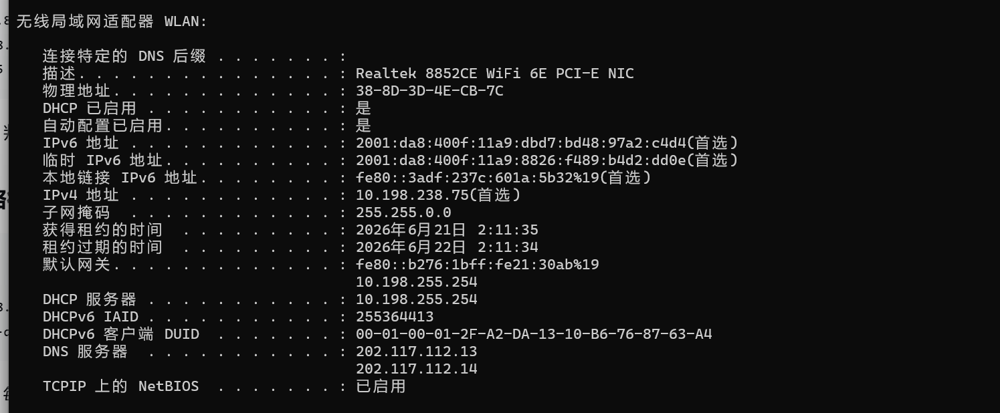
- 查看路由表：route print
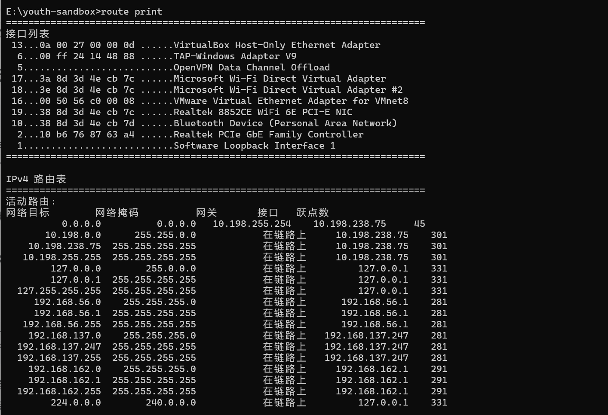
- 操作路由表（管理员权限）
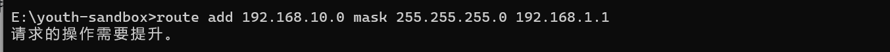
# 添加静态路由（持久化：-p） route add -p 192.168.10.0 mask 255.255.255.0 192.168.1.1 # 删除指定路由 route delete 192.168.10.0 # 修改默认网关 route change 0.0.0.0 mask 0.0.0.0 192.168.1.254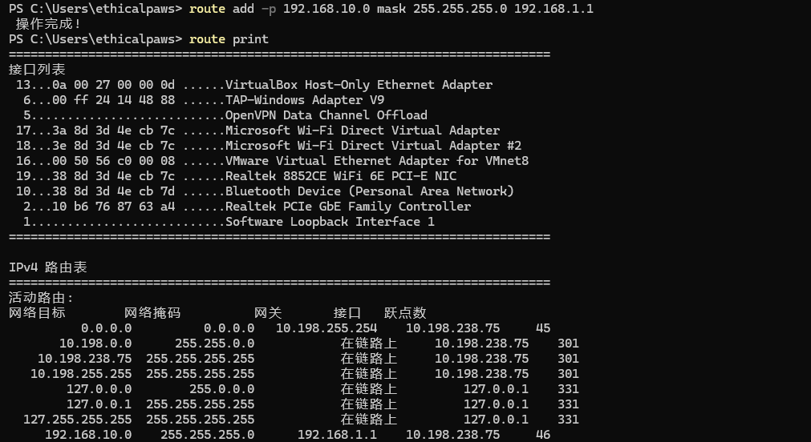
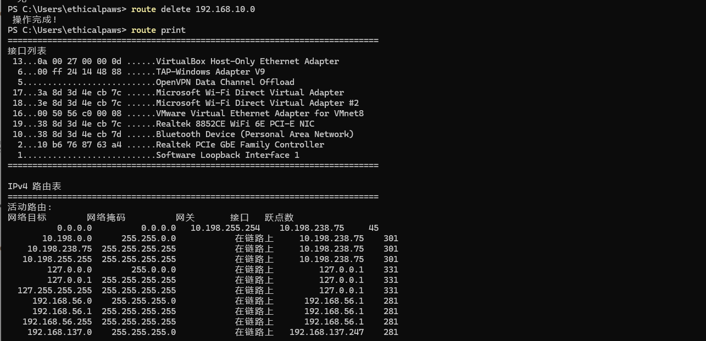
实战场景 默认网关劫持：如果已获得管理员权限，可以将目标的默认网关改为自己的IP（假设为 192.168.1.100），同时开启IP转发。之后，目标所有外网流量都会先经过自己 注意：此操作会中断未开启转发时的所有外网访问，容易被发现。通常更隐蔽的做法是ARP欺骗，而非修改路由表 - 测试连通性
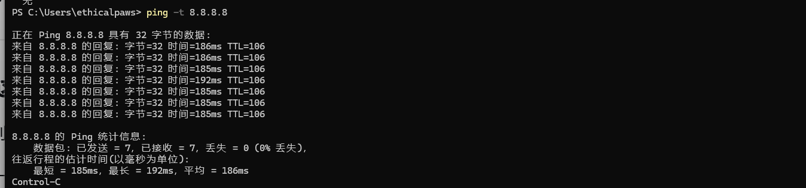
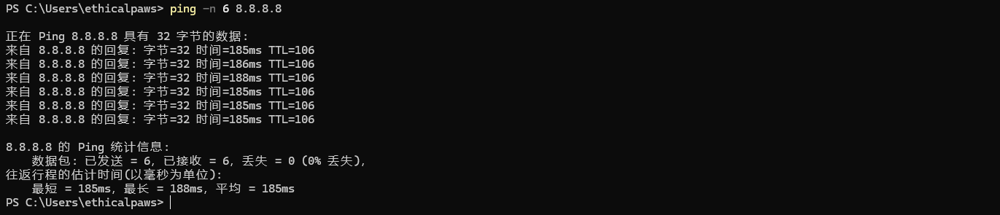
- 追踪路径
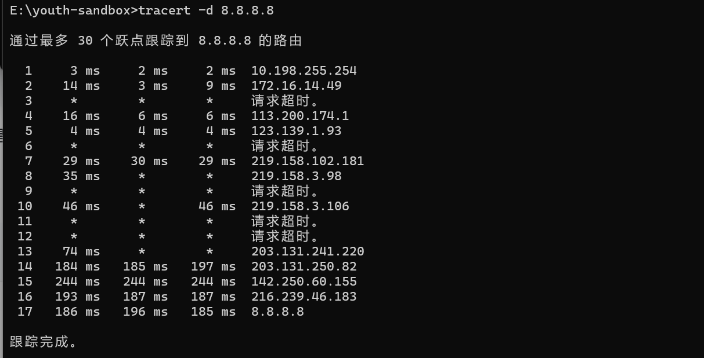
linux¶
- 查看IP地址与子网掩码：ifconfig、ip addr show、ip a
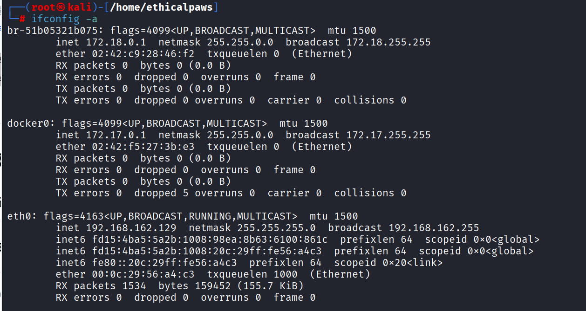
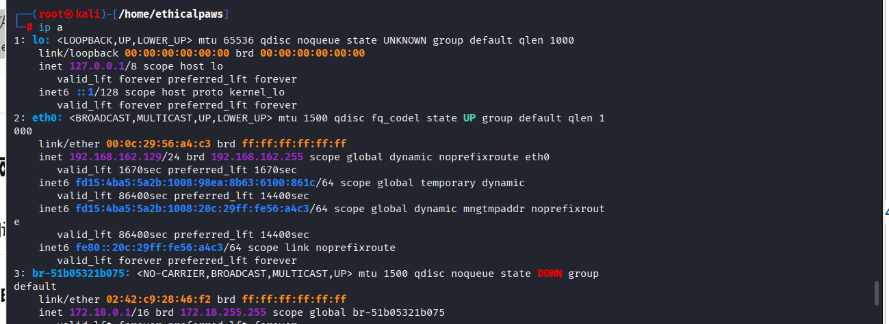
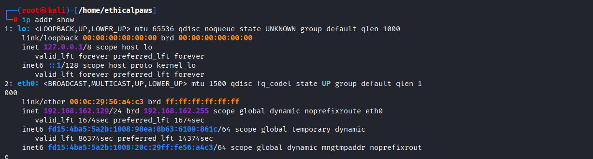
- 查看路由表（核心）：ip route show、ip r、rpute -n
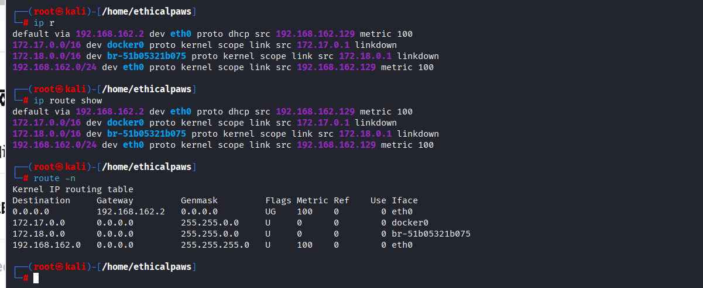
- 操作路由表（需要root权限）
# 添加静态路由 sudo ip route add 192.168.10.0/24 via 192.168.1.1 # 删除路由 sudo ip route del 192.168.10.0/24 # 修改默认网关 sudo ip route change default via 192.168.1.254 # 传统方式（route命令） sudo route add -net 192.168.10.0 netmask 255.255.255.0 gw 192.168.1.1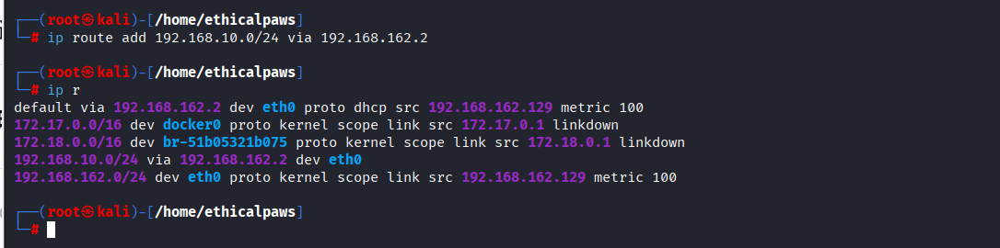
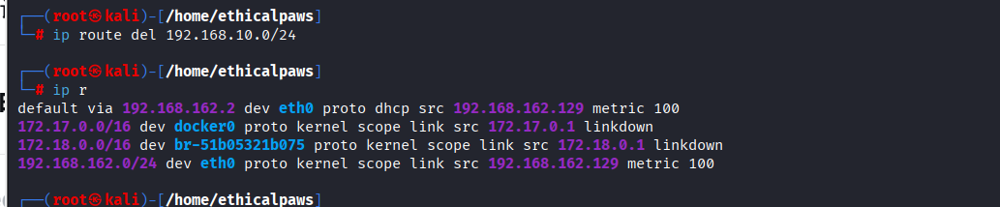
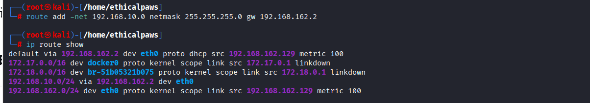
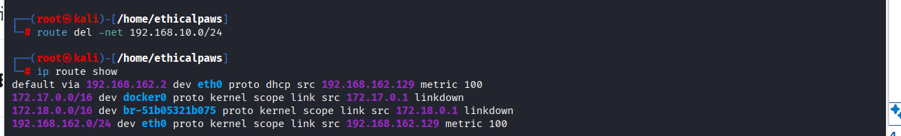
- 查看IP转发状态（渗透测试常用）
# 查看当前状态（0=关闭，1=开启） cat /proc/sys/net/ipv4/ip_forward # 临时开启（重启后失效） echo 1 > /proc/sys/net/ipv4/ip_forward # 永久开启 # 编辑 /etc/sysctl.conf，取消注释或添加： net.ipv4.ip_forward=1 # 然后执行 sudo sysctl -p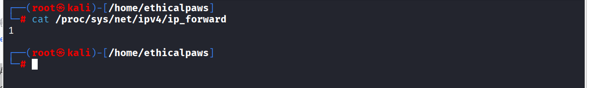
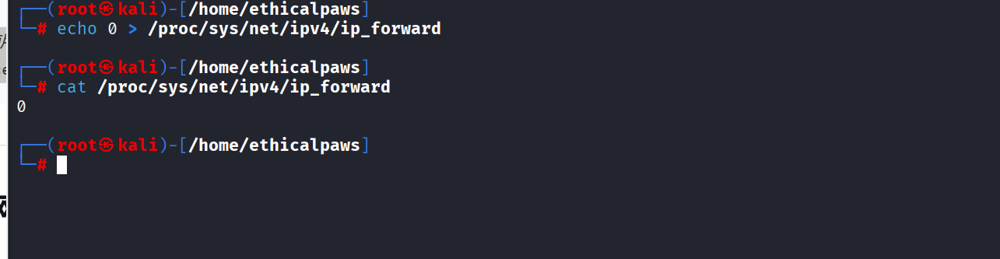
实战意义：当做流量转发或搭建VPN时，必须开启IP转发 -
测试连通性
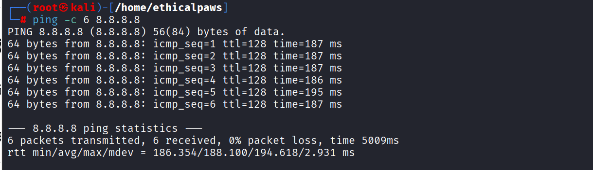
-
追踪路径
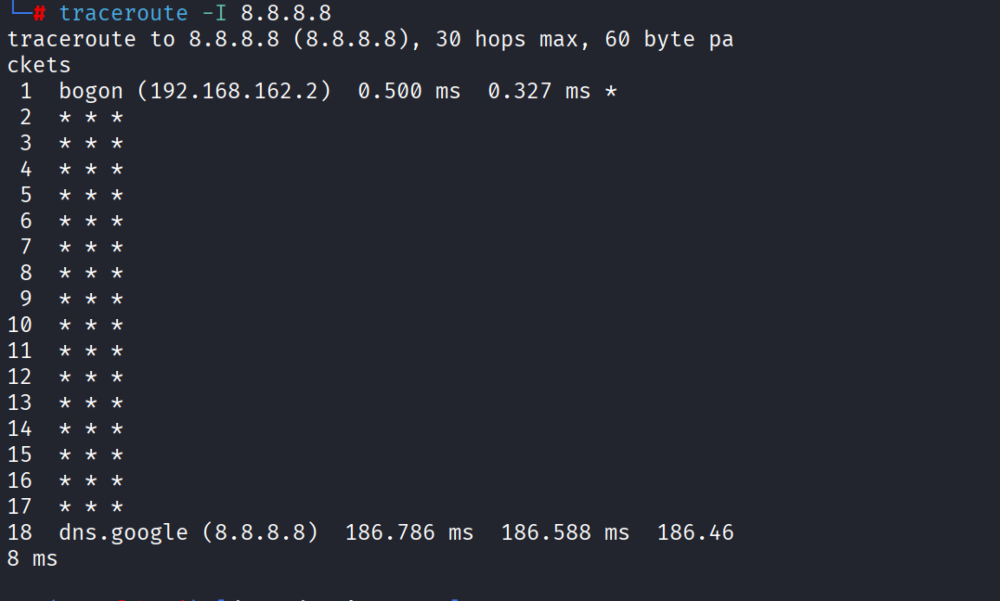
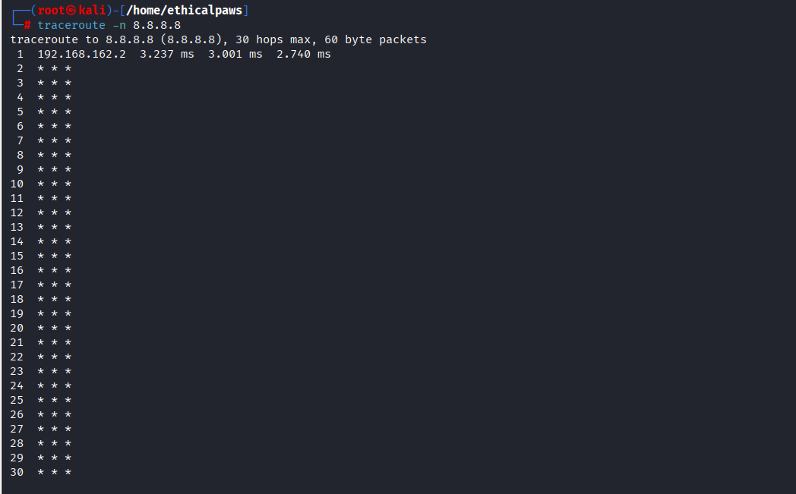
IP协议¶
- IP地址与子网掩码
- IP数据报格式【wireshark抓包查看】
ARP协议具体工作过程¶
- 主机A在局域网中发送ARP请求报文，内容是我想要与IP地址为xx的主机通信，但不知道你的MAC地址，请告诉我你的MAC地址
- 交换机将广播包从除了与主机A相对应接口的其他接口发送出去
- 只有与目的IP地址一致的主机（假设为主机B）才会返回ARP响应报文，告诉主机A自己的MAC地址，其他主机收到广播报文后会自动丢弃
- 主机A收到响应报文后会在自己的ARP缓存表中记录主机B的ip和MAC地址的映射关系
- 主机B收到主机A的ARP请求报文后会记录主机A的ip和MAC地址的映射关系
- 如果目录通信主机与主机A不在同一局域网中，那么找到的就是网关
其他重要协议¶
DHCP协议¶
- 作用：为网络中的主机自动分配IP地址
- 工作流程
- 细节
- 实战
- DHCP欺骗：在内网里，如果攻击者运行一个伪造的DHCP服务器（如dnsmasq），可以给客户端分配恶意IP（指向攻击者）或恶意DNS，实现中间人攻击。
- 判断网络环境：ipconfig、ip addr显示IP是自动获取的（DHCP Enabled: Yes），说明网络有DHCP服务
- 发现网关、DNS：ipconfig /all 、ip addr show可以看到DHCP下发的默认网关和DNS服务器，属于内网信息收集的一部分
- 环节ipv4短缺：DHCP是缓解IPv4地址不足的重要手段（动态分配，IP可以回收再利用）
ICMP协议¶
- 不传输用户数据，而是传递网络本身的状态信息。由于ip协议只是尽可能交付但不保证可靠，icmp协议可以提高ip数据报成功交付的几率
- 功能
- 确认ip包是否到达目的地
- 提供ip数据包未成功交付的原因
- 类型
- 差错报告报文【终点不可达、源点抑制、超时、参数问题、改变路由（重定向）】
- 询问报文【回送请求和回答（ping）、时间戳请求和回答（用于网络时钟同步）】
- 差错报告报文格式
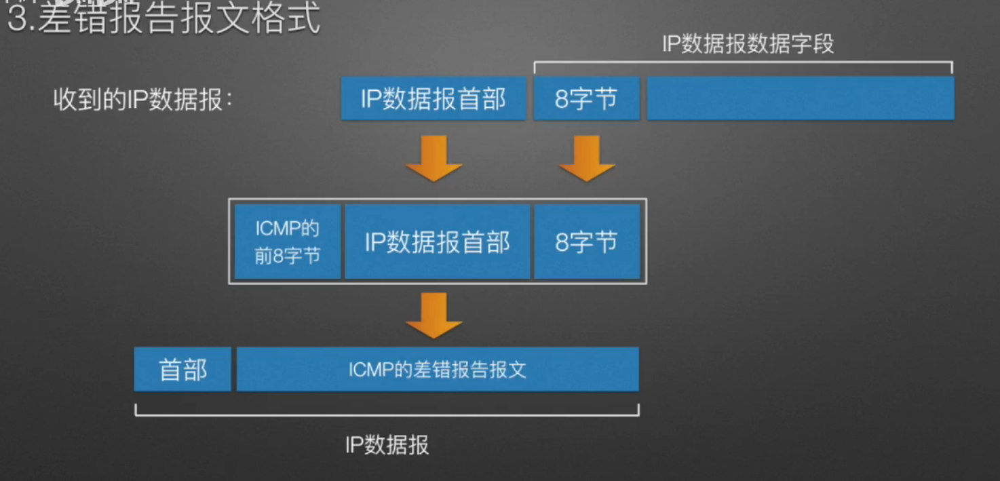
- 应用示例
- ping：ping命令是应用层直接使用网络层icmp的例子（没有经过传输层UDP或tcp）
- tracert：用来追踪一个数据包从源主机到目的主机经过的路径（利用TTL【生存时间】字段）
- 实战关联
1. 内网主机发现：ping【用 ping 扫整个网段：for /l %i in (1,1,254) do ping -n 1 192.168.1.%i，看哪些IP有回复】 2. 网络路径探测：ttl【用 tracert / traceroute 了解网络拓扑，判断经过多少跳、是否有防火墙】 3. icmp隧道绕过防火墙：将数据封装在ICMP Echo报文中【防火墙常放行ICMP，可用工具如 icmptunnel 或 ptunnel 建立隐蔽通道，实现数据外传或远程访问】 4. DoS：ICMP Flood【发送大量ICMP请求，耗尽目标带宽或CPU资源】 5. ICMP重定向：中间人攻击【攻击者伪造路由器的重定向报文，告诉受害者“所有去往外网的流量都发给攻击者”，实现流量劫持（类似ARP欺骗的效果，但发生在网络层）】
NAT协议¶
- 网络地址转换协议——使主机能够通过私有IP地址访问互联网
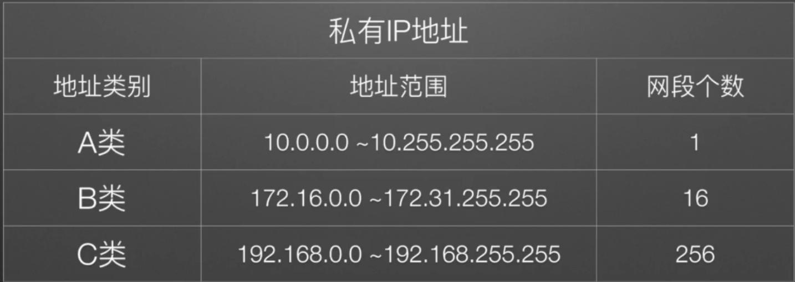
- 类型
- NAT表：公网ip:端口 <————>私有ip:端口
- 工作原理（关键点：外网看到的永远是路由器的IP（1.2.3.4），内网IP对外完全不可见）：
- 优点
- 不同网关NAT路由器对应的私有IP地址可以重复，大大减缓了ipv4地址不够用的压力
- 提高本地网络的安全性
- 实战关联
路由¶
- 默认路由
- 直连网络路由
路由表¶
- 当系统要发送一个数据包时，它按以下顺序做决策：
- 实战关联